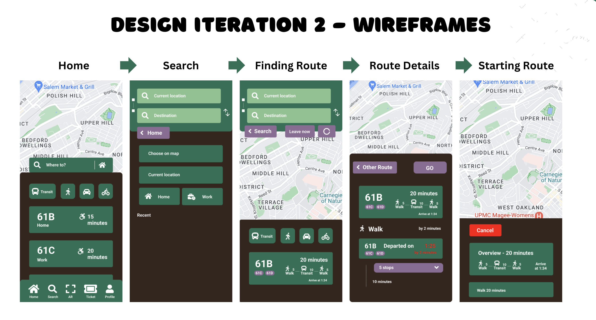
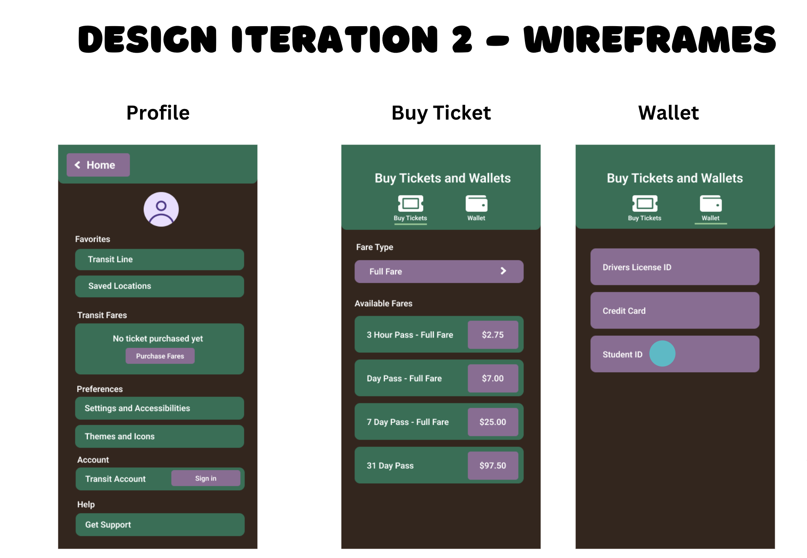
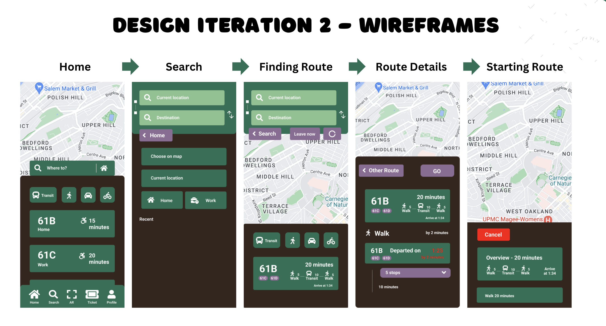
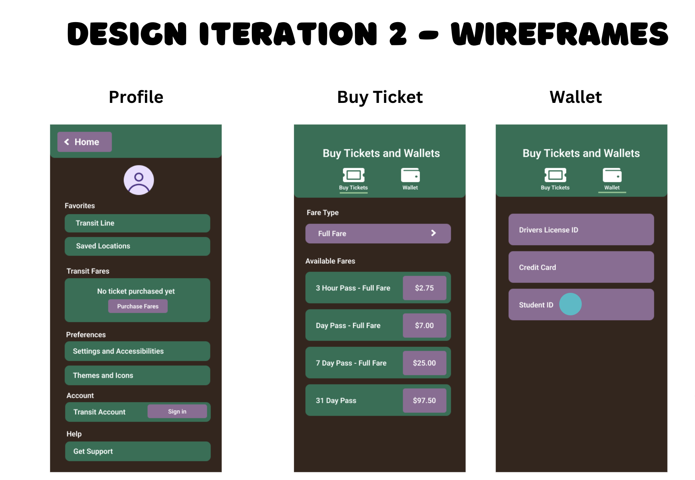

Projects
Transit App Redesign (Flutter) – August to December 2024
Collaborated on an interactive mobile prototype using Flutter and Android Studio, leveraging insights from over 10,000 reviews from Google Maps, Apple Maps, and Transit apps. Through 40 user interviews and surveys, I iterated on Figma wireframes to improve navigation, accessibility, and overall usability.
 



Team members:
- Srushti Chavan
- Raquel Buege
- Alice Wen
- Christina Yang
PillScribe - January to April 2025
Collaborated on a mobile solution to reduce prescription and dispensing errors. I contributed to requirements documentation, wireframes, and concept presentations, designing intuitive workflows to enhance patient safety during prescribing, dispensing, and administration.

Team Members:
- Srushti Chavan
- Morgan Noonan
- Amy Zhang
- Lucas Weiland
Data-Driven Borough Safety Analysis (Python) - May to August 2023
Processed and analyzed NYC crime datasets using Python and Pandas, creating visualizations with Matplotlib and Seaborn to compare trends across boroughs. Analysis ranked borough safety and provided actionable insights grounded in data. View the dataset
Responsive Ice Cream Shop Website (HTML, CSS, JavaScript) - January to April 2025
Built a fully responsive website including a dynamic order form and an embedded Google Maps location. The design ensured cross-device compatibility and incorporated interactive UI elements for a better user experience.